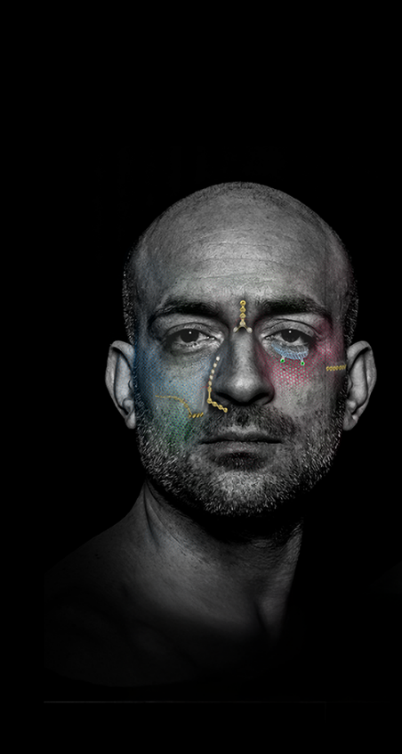
Capítulo 03
Midface
Perfil bajo donde la cobertura de partes blandas es mínima. Placas, mallas y suelo orbitario en tres espesores.
8
Implantes del tercio medio facial
Titanio ASTM F67, semirrígido, moldeable y cortable en toda la línea. La elección es el espesor.
Espesor de la placaDistancia entre orificiosMaterialRigidezDobrávelCortávelDiámetros de los tornillos
0,25 mm4 mmTitanio (ASTM F67)SemirrígidaSíSí1,2 / 1,5 / 1,8
0,40 mm4 mmTitanio (ASTM F67)SemirrígidaSíSí1,2 / 1,5 / 1,8
0,60 mm5 mmTitanio (ASTM F67)SemirrígidaSíSí1,2 / 1,5 / 1,8
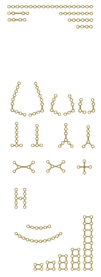
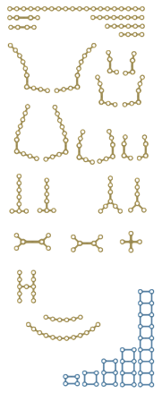
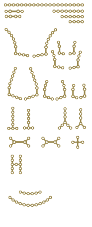
MODUS 2 — Midface / Implantes
9
Visión general del sistema — Midface
Placas — espesor
t = 0,5
t = 0,6 / 0,7
t = 1,0
Malla y placas del suelo orbitario
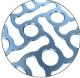
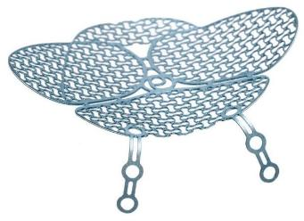
Tornillos
HD4 Estándar Ø 1,2 mm
3, 4, 5, 6, 7, 8, 9, 11 mm
3, 4, 5, 6, 7, 8, 9, 11 mm
HD4 Estándar Ø 1,5 mm
3, 4, 5, 6, 7, 8, 9, 11 mm
3, 4, 5, 6, 7, 8, 9, 11 mm
HD4 Estándar Ø 1,8 mm
3, 4, 5, 6, 7, 8, 9, 11 mm
3, 4, 5, 6, 7, 8, 9, 11 mm
SpeedTip HD4 Ø 1,5 mm
4, 5, 6, 7, 8, 9 mm
4, 5, 6, 7, 8, 9 mm
1,21,51,8
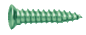
MODUS 2 — Midface / Visión general
10
Características generales de las placas
Diseñadas para acompañar cada región anatómica del tercio medio facial — espesor óseo, cobertura de partes blandas y estabilidad.
⎼Perfil bajo a partir de 0,5 mm de espesor
⎼Bordes redondeados y superficie lisa para proteger los tejidos blandos
⎼Barras en las áreas de puente en placas seleccionadas
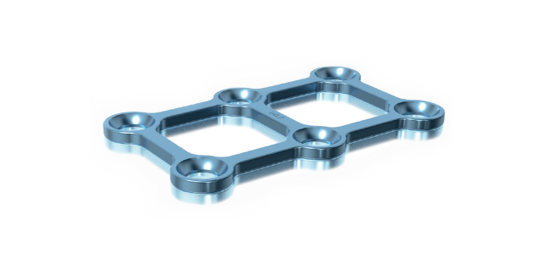
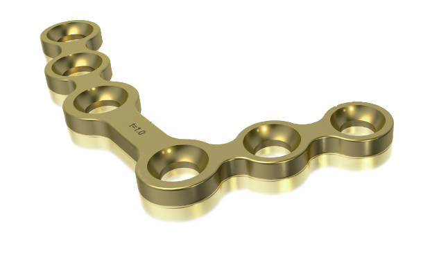
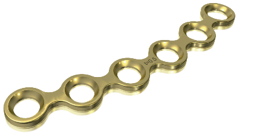
MODUS 2 — Midface / Placas
11
Características generales de la malla
⎼Diseño de malla 3D
⎼Perfil bajo: 0,25 mm / 0,4 mm / 0,6 mm
⎼Dos tamaños de placa, cada uno en tres espesores
⎼Dos esquinas redondeadas adyacentes en el tamaño 50 × 50 mm
⎼El diseño permite el rebaje de la cabeza del tornillo
⎼Bordes redondeados y superficie lisa
MODUS 2 — Midface / Malla
12
Placas del suelo orbitario
⎼Cuatro geometrías de implante
⎼Perfil bajo: 0,35 mm / 0,4 mm
⎼Diseño de malla 3D con barras estabilizadoras
⎼Líneas de corte preposicionadas permiten cortar a lo largo de la barra, sin rebaba
MODUS 2 — Midface / Suelo orbitario
13
Visión general de los tornillos
Interfaz HexaDrive 4 en toda la línea Midface. El color identifica el diámetro.
TornilloDiámetroInterfaz
Tornillo Cortical 1.2Ø 1,2 mmHexaDrive 4
Tornillo Cortical 1.5Ø 1,5 mmHexaDrive 4
Tornillo Cortical 1.8Ø 1,8 mmHexaDrive 4
Tornillo SpeedTip 1.5Ø 1,5 mmHexaDrive 4
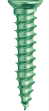
MODUS 2 — Midface / Tornillos
14